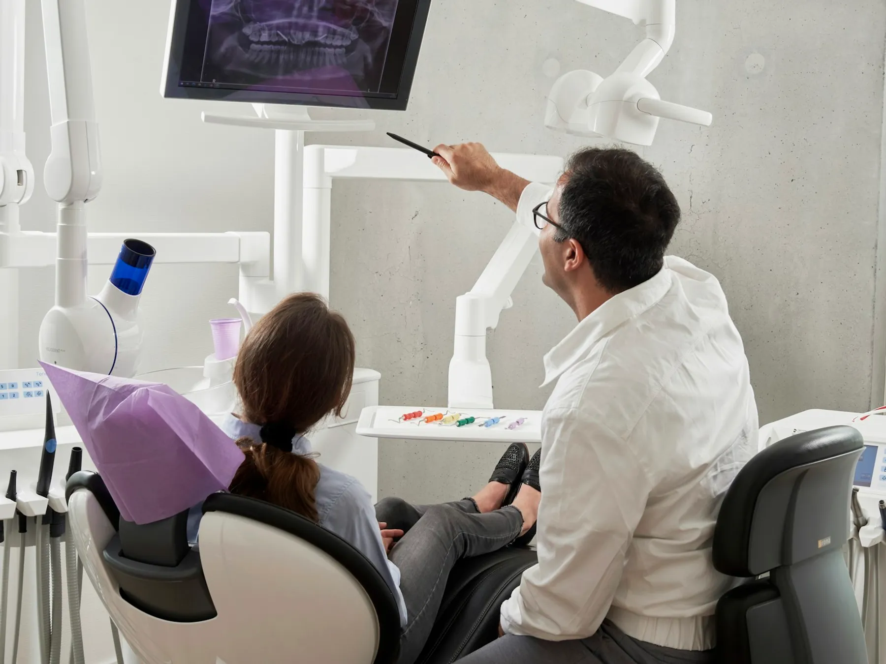
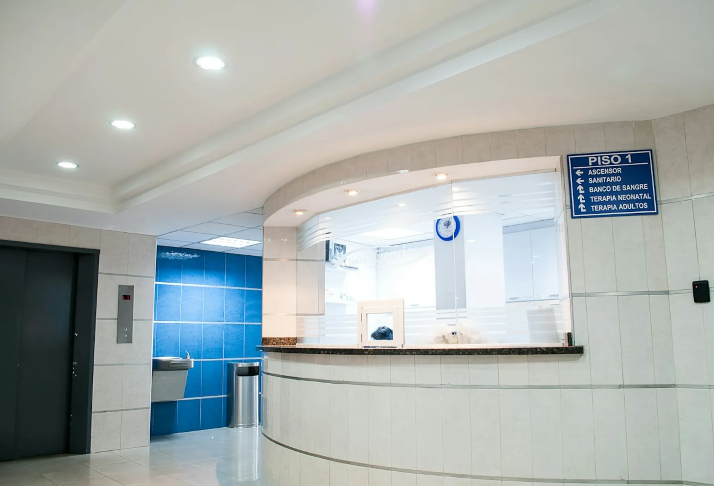
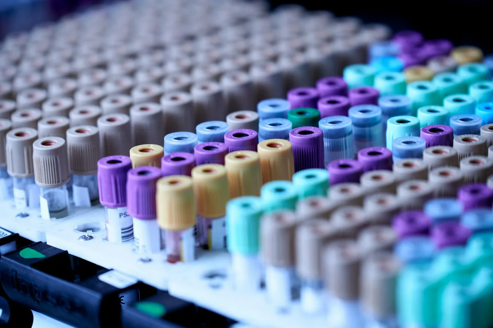

Nutzen für die Praxis
Strukturiert in den Workflow eingebunden
Zusätzliche Messwerte stehen im Point-of-Care-Prozess zur Verfügung und können in Beratung und Versorgung eingeordnet werden.

PolarisDX unterstützt professionelle Anwender dabei, Point-of-Care-Diagnostik mit IglooPro in bestehende Abläufe zu integrieren – von der passenden Lösung bis zur Anwendung vor Ort.

PolarisDX unterstützt professionelle Anwender dabei, Point-of-Care-Diagnostik mit IglooPro in bestehende Abläufe zu integrieren – von der passenden Lösung bis zur Anwendung vor Ort.

IglooPro Reader

PolarisDX unterstützt professionelle Anwender dabei, Point-of-Care-Diagnostik mit IglooPro in bestehende Abläufe zu integrieren – von der passenden Lösung bis zur Anwendung vor Ort.
PolarisDX unterstützt professionelle Anwender dabei, Point-of-Care-Diagnostik mit IglooPro in bestehende Abläufe zu integrieren – von der passenden Lösung bis zur Anwendung vor Ort.
PolarisDX bündelt Point-of-Care-Diagnostik, den IglooPro Reader und Epigenetik in klar getrennten Bereichen.
Point-of-Care-Diagnostik und fachbezogene Anwendungen für Praxen und medizinische Einrichtungen.
Diagnostik entdecken
Der IglooPro Reader wertet kompatible Schnelltests direkt am Point of Care aus.
IglooPro ansehenEin eigenständiger Bereich für epigenetische und genetische Analysen sowie zugehörige Musterbefunde.
Epigenetik kennenlernenDental, Beauty und Longevity führen zu drei bereits veröffentlichten Diagnostikbereichen. Das vollständige Portfolio bleibt im Diagnostik-Hub.
Point-of-Care-Messungen stellen zusätzliche Informationen direkt im Praxisablauf bereit. Sie unterstützen die fachliche Einordnung, ohne sie zu automatisieren oder zu ersetzen.
Messwerte stehen nach der testspezifischen Bearbeitungszeit direkt am Point of Care zur Verfügung.
Anwendung, Messung und Dokumentation lassen sich als klarer Prozess in bestehende Praxisabläufe einbinden.
Verfügbare Werte können die fachliche Beratung und die gemeinsame Besprechung sinnvoller nächster Schritte unterstützen.
Zusätzliche Messwerte stehen im Point-of-Care-Prozess zur Verfügung und können in Beratung und Versorgung eingeordnet werden.
Verfügbare Werte können im Versorgungskontext erklärt werden. Der Test ergänzt die professionelle Beurteilung; er ersetzt weder Diagnose noch Behandlung.
Ein klarer Ablauf macht Messinformationen im Praxisalltag nutzbar und lässt die medizinische Verantwortung bei den behandelnden Fachpersonen.
Probe und Test werden nach der jeweiligen Anleitung vorbereitet und mit dem kompatiblen System gemessen.
Nach der testspezifischen Bearbeitungszeit steht der Messwert im Praxisablauf zur Verfügung — ohne automatische medizinische Schlussfolgerung.
Die verantwortliche Fachperson bewertet den Wert im individuellen Kontext und bespricht gegebenenfalls sinnvolle nächste Schritte.

„Schulung und Support durch PolarisDX sind unkompliziert – das Gerät ist fester Bestandteil unseres Alltags geworden."
In unter einer Minute sehen, welches Selbstzahler-Potenzial chairside Diagnostik in Ihrer Praxis hat.
Fachbeiträge unseres POC-Diagnostik-Teams – fundiert, praxisnah, aktuell.
Alle Fachartikel anzeigen
PolarisDX bündelt drei eigenständige Einstiege: Point-of-Care-Diagnostik, den IglooPro Reader und Epigenetik. Die jeweiligen Bereiche geben einen Überblick und führen zu den bereits veröffentlichten Fachinformationen.
Bereit loszulegen
Sprechen Sie mit unserem Team über eine passende Point-of-Care-Lösung oder prüfen Sie Ihre eigenen Annahmen im unverbindlichen ROI-Rechner.